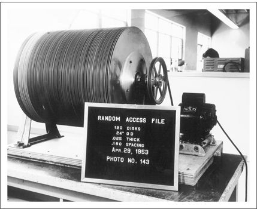

A team of researchers at IBM’s San Jose research laboratories developed the first disk drive between 1952 and 1956. Named RAMAC (for Random Access Method for Accounting and Control), this drive was the size of a large refrigerator, incorporated fifty twenty-four-inch disks, and could store 5 megabytes (MB) of information (see Figure 1.2). Most of the fundamental architectural concepts and component technologies that defined today’s dominant disk drive design were also developed at IBM. These include its removable packs of rigid disks (introduced in 1961); the floppy disk drive (1971); and the Winchester architecture (1973). All had a powerful, defining influence on the way engineers in the rest of the industry defined what disk drives were and what they could do.
Figure 1.2 The First Disk Drive, Developed by IBM

Source: Courtesy of International Business Machines Corporation.
As IBM produced drives to meet its own needs, an independent disk drive industry emerged serving two distinct markets. A few firms developed the plug-compatible market (PCM) in the 1960s, selling souped-up copies of IBM drives directly to IBM customers at discount prices. Although most of IBM’s competitors in computers (for example, Control Data, Burroughs, and Univac) were integrated vertically into the manufacture of their own disk drives, the emergence in the 1970s of smaller, nonintegrated computer makers such as Nixdorf, Wang, and Prime spawned an original equipment market (OEM) for disk drives as well. By 1976 about $1 billion worth of disk drives were produced, of which captive production accounted for 50 percent and PCM and OEM for about 25 percent each.
The next dozen years unfolded a remarkable story of rapid growth, market turbulence, and technology-driven performance improvements. The value of drives produced rose to about $18 billion by 1995. By the mid-1980s the PCM market had become insignificant, while OEM output grew to represent about three-fourths of world production. Of the seventeen firms populating the industry in 1976—all of which were relatively large, diversified corporations such as Diablo, Ampex, Memorex, EMM, and Control Data—all except IBM’s disk drive operation had failed or had been acquired by 1995. During this period an additional 129 firms entered the industry, and 109 of those also failed. Aside from IBM, Fujitsu, Hitachi, and NEC, all of the producers remaining by 1996 had entered the industry as start-ups after 1976.
Some have attributed the high mortality rate among the integrated firms that created the industry to its nearly unfathomable pace of technological change. Indeed, the pace of change has been breathtaking. The number of megabits (Mb) of information that the industry’s engineers have been able to pack into a square inch of disk surface has increased by 35 percent per year, on average, from 50 Kb in 1967 to 1.7 Mb in 1973, 12 Mb in 1981, and 1100 Mb by 1995. The physical size of the drives was reduced at a similar pace: The smallest available 20 MB drive shrank from 800 cubic inches (in. 3 ) in 1978 to 1.4 in. 3 by 1993—a 35 percent annual rate of reduction.
Figure 1.3 shows that the slope of the industry’s experience curve (which correlates the cumulative number of terabytes (one thousand gigabytes) of disk storage capacity shipped in the industry’s history to the constant-dollar price per megabyte of memory) was 53 percent—meaning that with each doubling of cumulative terabytes shipped, cost per megabyte fell to 53 percent of its former level. This is a much steeper rate of price decline than the 70 percent slope observed in the markets for most other microelectronics products. The price per megabyte has declined at about 5 percent per quarter for more than twenty years.